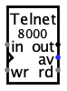

Telnet
| Library: | Input/Output |
| Introduced: | 4.0.0 |
| Appearance: |
 |
Behavior
The Telnet component opens a TCP server socket on the configured port. An external program can connect to this port using telnet, netcat, a browser, or any other TCP client. Bytes received from clients are stored in an internal buffer. Bytes sent by the circuit are written to the most recently connected client.
The component transfers one byte at a time. The Available output is 1 while the receive buffer contains at least one byte. When the Read input is 1, the oldest received byte appears on the out output if data is available. On the configured clock edge, the byte is removed from the receive buffer if Read is 1, and the byte on the in input is sent to the client if Write is 1.
If no client is connected, writes have no visible effect. If several Telnet components use the same port, they share the same server socket; normally a project should use at most one Telnet component for each TCP port.
Pins
- West edge, upper pin labelled in (input, bit width 8)
- The byte to send to the connected TCP client.
- East edge, upper pin labelled out (output, bit width 8)
- The oldest byte received from a TCP client while Read is 1 and Available is 1. The output is unknown while Read is 0.
- West edge, middle pin marked by triangle (input, bit width 1)
- Clock - the configured clock edge performs the enabled read and write operations.
- West edge, lower pin labelled wr (input, bit width 1)
- Write - when 1, a clock edge sends the byte on the in input to the connected client.
- East edge, lower pin labelled rd (input, bit width 1)
- Read - when 1, the oldest received byte is driven on the out output and a clock edge removes that byte from the receive buffer.
- East edge, middle pin labelled av (output, bit width 1)
- Available - 1 when at least one received byte is waiting in the receive buffer.
Attributes
- Use Telnet protocol
- When enabled, the server performs basic Telnet option negotiation and ignores Telnet command sequences from the client. Leave this disabled for raw TCP clients such as netcat, simple scripts, and most browser examples.
- Port
- The TCP port on which the component listens. The default is 8000.
- Buffer Length
- The number of received bytes that can wait in the internal buffer.
- Trigger
- Determines whether the component performs enabled read and write operations on a rising or falling clock edge.
- Label, Label Location, Label Font
- Configure the optional component label.
Poke Tool Behavior
None.
Text Tool Behavior
None.